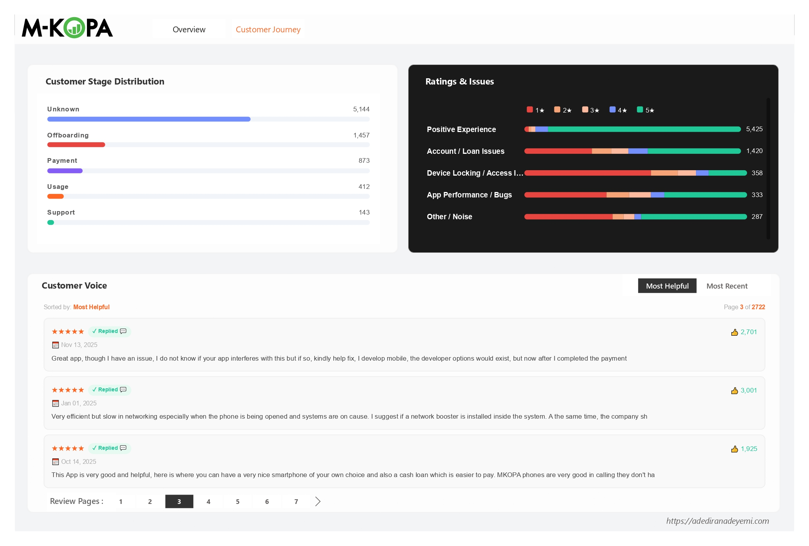

Project Overview
M-KOPA is one of Africa's largest device financing platforms, providing pay-as-you-go smartphones and solar energy products to over 4 million customers across Kenya, Uganda, Nigeria, Ghana, and South Africa. With a 4.2 average star rating across 8,165 reviews on the Google Play Store, the headline numbers look healthy. But headline numbers are where insight ends for most teams - and where this analysis begins.
This project analyses 8,165 M-KOPA Google Play Store reviews from January 2025 to February 2026, covering a dataset pre-enriched with NLP-based intent classification across 78 unique intents, 10 primary classes, and 7 customer journey stages. The analysis applies Python-based statistical analysis and an intent-weighted composite risk framework to answer a question that star ratings cannot: where in the customer journey is M-KOPA generating distrust, and which of those issues are policy problems versus product problems?
Central finding: M-KOPA's post-payment experience is systematically destroying the goodwill built during onboarding and usage. Customers who complete loan repayments - the most loyal, highest-lifetime-value segment - are encountering device locks, unresolved balances, and cash loan denials that 21,357 users have collectively thumbed up as serious grievances. This is a trust-extinction moment at precisely the point where a customer should be converting to a second loan or recommending the product to others.
The analysis also surfaces a silent majority problem: the "Unlock Device" intent has only 38 reviews but 6,556 thumbs - an average of 173 endorsements per review. The users who are experiencing device lock issues post-payment are so broadly validated by other users that the intent's review count dramatically understates its true prevalence.
Full Python analysis code, enriched dataset, and Power BI dashboard available on GitHub.
78 intents · 10 primary classes · 14-month trend analysis · composite risk scoring
The Business Problem
For a fintech platform operating in a competitive, trust-sensitive market, a 4.2-star average hides more than it reveals. M-KOPA's model depends on loan repayment discipline and repeat loan uptake. A customer who repays their first device loan is not a completed transaction - they are the starting point for a cash loan relationship, a second device upgrade, and potentially years of recurring revenue. The question is whether the product experience at repayment completion is strong enough to convert a first-time borrower into a long-term financial services customer.
The raw review data held answers to strategic questions the product team could not answer from aggregate ratings:
- Which specific intents account for the most community-validated pain - where high thumbsUpCount signals that many more users share the same issue than are writing reviews about it?
- At which stage of the customer journey does sentiment collapse, and is that collapse driven by product failures or policy decisions?
- Do support replies actually improve customer sentiment, or are some intents so policy-driven that support engagement makes scores worse?
- Are there version-specific spikes in bug reports that signal regression patterns in the engineering release cycle?
- What is the single word - or single moment - that keeps appearing across every high-risk intent cluster?
Answering these questions - and distinguishing between what customer service can fix and what requires a product or policy change - is the work this project sets out to do.
Dataset & Methodology
The dataset covers Google Play Store reviews submitted for the M-KOPA app between January 2025 and February 2026. Each review was pre-enriched with NLP-based intent classification fields before analysis.
| Field | Type | Description |
|---|---|---|
| reviewId | string | Unique identifier per review |
| content | string | Raw review text |
| score | integer | Star rating (1-5) |
| thumbsUpCount | integer | Play Store helpfulness votes from other users |
| at | datetime | Review submission timestamp |
| replyContent | string / null | Developer response text (null if no reply) |
| repliedAt | datetime / null | Timestamp of developer reply |
| appVersion | string | App version at time of review |
| primary_class | string | Top-level NLP classification (10 classes) |
| customer_stage | string | Journey stage: Onboarding, Payment, Usage, Offboarding, Support, Default, Unknown |
| intent | string | Granular NLP intent label (78 unique values) |
| Dataset Metric | Value |
|---|---|
| Total reviews | 8,165 |
| Date range | Jan 2025 - Feb 2026 (14 months) |
| Unique intents | 78 |
| Primary classes | 10 |
| Customer journey stages | 7 |
| 5★ reviews | 5,837 (71.5%) |
| 1★ reviews | 1,212 (14.8%) |
| Reviews with developer reply | ~99% for high-volume intents |
Analytical Methodology
Intent-Level Risk Profiling
Each of the 78 intents was profiled across: total review count, percentage of 1-2★ reviews, total thumbsUpCount weighted to low-star reviews, average rating, and standard deviation of ratings (to identify polarised vs consistently negative intents). Only intents with 10+ reviews were included in comparative analysis to avoid small-sample distortion.
Composite Risk Scoring
A composite risk score was computed per intent to move beyond single-metric ranking: Risk = (5 − avg_rating) × log(1 + total_thumbs) × (pct_low_star / 100). This formula penalises intents with both high distress (low rating) and broad community validation (high thumbs), while normalising for volume differences across intents. The result is a single sortable score that reflects the combination of severity, scale, and community endorsement.
Customer Journey Friction Mapping
Reviews were segmented by customer_stage to map where in the M-KOPA journey each intent concentrates. Low-star percentage per stage was computed to identify the highest-friction transition points. Stage-intent crosstabulation revealed which intents are structural (recurring across stages) vs stage-specific (concentrated at a single friction point).
Support Effectiveness Analysis
For intents with sufficient replied and unreplied review samples, average star ratings were compared between reviews that received a developer response and those that did not. A positive lift score indicates that responding to that intent's reviews is associated with higher ratings; a negative lift indicates that responses either do not help or actively worsen sentiment - pointing to issues that require product action, not support scripts.
Keyword Extraction & Root Cause Discovery
For each high-risk intent, the review corpus was tokenised, stop-words were removed, and word frequency counts were computed to identify the specific product moments or phrases recurring in negative reviews. This moves the analysis from "users are unhappy about device locks" to "users are unhappy because their phone was locked after completing payment" - a distinction with entirely different implications for the product team.
Intent Classification Framework
The most important analytical asset in this dataset is its NLP-based intent classification, which translates raw review text into actionable product signals. The taxonomy was designed to capture the granular purpose behind each review - not just its sentiment - so that product, support, and policy teams can act on specific customer needs rather than broad sentiment categories.
The 10 primary classes and their dominant intents are structured as follows:
- Praise Service (5,323)
- Praise Device (91)
- Praise Feature (7)
- Appeal Loan Denial (427)
- Request Loan (397)
- Question Eligibility (245)
- Complain Policy (97)
- Complain Delay (53+)
- Uninstall App (199)
- Complain Lock (46)
- Unlock Device (37)
- Dispute Lock (26)
- Complain Restriction (18)
- Report Bug (161)
- Update App (67)
- Reset Password (52)
- Check Balance (20)
- Request Feature (18)
- Flag Fraud (50)
- Flag Unfair Practice (12)
- Report Fraud (3)
- Flag Privacy Issue (3)
- Dispute Charge (25)
- Dispute Balance (10)
- Complain Interest (29)
- Complain Price (17)
Classification gap to note: The "Other / Noise" primary class contains 137 "Complain Service" reviews that would more accurately belong in "Customer Support." This misclassification suppresses the true volume of service complaints and understates the "Customer Support" class in any executive-level reporting. Any dashboard or KPI built on primary_class should apply a correction to this category before distribution to stakeholders.
Power BI Dashboard
The Power BI dashboard translates the Python analysis into an operational monitoring tool structured across two tabs: an executive Overview tab and a Customer Journey deep-dive tab.

Dashboard Design Decisions
The Overview tab was built for product and CX leadership: a single-screen view of headline metrics, monthly trend, and intent concentration. The Customer Journey tab was built for operational teams: the ratings-by-class stacked bar chart makes it immediately visible which primary classes are dominated by 1★ red, and the live "Customer Voice" panel enables direct review reading sorted by helpfulness - so the most community-endorsed complaints surface first, not the most recent.
The choice to sort by thumbsUpCount by default (rather than date) is a deliberate analytical decision: it prioritises the issues that the broadest community agrees on over the issues that happened to be written most recently. This is particularly important for a fintech product where a single frustrated review about a policy issue can attract hundreds of endorsements from users who share the same experience but have not written their own review.
Key Findings
Eight findings emerged from the full analysis. The most strategically important are summarised below, structured for direct product and business use.
The Most Community-Endorsed Issue Is a Policy Problem
Appeal Loan Denial accumulated 21,357 thumbsUpCount across 427 reviews - by far the most community-validated pain point in the dataset. 95% of these reviews come from the Offboarding stage, and developer replies make scores worse by 0.54★, confirming this cannot be resolved with support scripting.
Unlock Device Is the Highest-Density Silent Majority Signal
Only 38 users wrote an Unlock Device review - but those 38 reviews accumulated 6,556 thumbs. At 173 thumbs per review, this is the strongest signal in the dataset that far more users are experiencing post-payment device lock issues than are writing about them.
Half of All Offboarding-Stage Reviews Are 1-2★
The Offboarding stage (1,457 reviews) has a 50% low-star rate - the highest of any identifiable stage. This is the stage where customers have completed their device loan and are either requesting cash loans, waiting for clearance, or trying to exit the product. It is where M-KOPA most consistently fails its most loyal customers.
One Word Appears Across Every High-Risk Intent
Keyword extraction across the top-10 highest-risk intents reveals "after" as the single most cross-cutting term. Users are being locked out, denied loans, and frustrated after paying. The post-payment experience - not the onboarding or usage experience - is where M-KOPA's retention problem lives.
The Highest Single-Review Thumbs Count Is a Fraud Accusation
A single Flag Fraud review - describing the post-repayment cash loan experience as a scam - received 3,028 thumbsUpCount. This is the highest-endorsed individual review in the dataset and is sitting publicly on the Play Store for every prospective customer to see at the top of "Most Helpful" results.
Bug Reporting Is the Intent Where Replies Help Most
Report Bug reviews that received a developer reply average 1.69★ higher than those that did not. This is the most positive support lift in the dataset - and suggests that M-KOPA's tech support responses on app bugs are genuinely effective at partially recovering user sentiment.
Customer Journey Friction Map
The customer journey analysis reveals that M-KOPA's rating problem is not evenly distributed. It is concentrated at two specific stages that represent opposite ends of the relationship: where customers are trying to get more value out of the product (Offboarding / cash loans), and where something has gone wrong and they need help (Support).
| Customer Stage | Reviews | Avg Rating | % Low-Star (1-2★) | Dominant Friction Intents |
|---|---|---|---|---|
| Support | 143 | 2.62★ | 57% | Reset Password, Complain Service |
| Offboarding | 1,457 | 2.85★ | 50% | Appeal Loan Denial (405), Uninstall App (213) |
| Default | 40 | 3.30★ | 38% | Complain Lock, Request Feature |
| Usage | 412 | 3.43★ | 36% | Report Bug (135), Praise Device (91) |
| Payment | 873 | 3.89★ | 25% | Praise Service (342), Request Loan (143) |
| Onboarding | 96 | 3.90★ | 24% | Praise Service (52), Report Bug (13) |
| Unknown | 5,144 | 4.69★ | 5% | Praise Service (4,838) |
The Offboarding stage is a structural failure point, not expected friction. 1,457 reviews at 50% low-star represents nearly all of Appeal Loan Denial (405/427 reviews originate here) and almost all Uninstall App (213/216 reviews). This is not customers having problems during the product experience - it is customers who have successfully completed their loan repayment being denied the next product benefit they were expecting. That distinction matters enormously for how to fix it.
The Transition That Breaks Everything
The data points to a specific product transition that M-KOPA has not solved: the moment a customer moves from being an active device borrower to being an eligible cash loan applicant. During active repayment, customers are satisfied (Payment stage: 3.89★ avg, 25% low-star). After repayment, sentiment collapses (Offboarding: 2.85★ avg, 50% low-star). The product is not designed to celebrate the completion of a loan and smoothly transition the customer to the next financial product - it is leaving them in a state of confusion and perceived abandonment.
Risk Ranking: Top 15 Intents by Composite Score
The composite risk score combines rating severity, community validation, and low-star rate to produce a single sortable priority ranking. The top 15 intents by risk score are:
| Rank | Intent | Avg ★ | Total 👍 | % Low-Star | Risk Score | Type |
|---|---|---|---|---|---|---|
| 1 | Flag Unfair Practice | 1.08★ | 1,687 | 100% | 29.1 | Policy |
| 2 | Flag Fraud | 1.70★ | 3,165 | 83% | 22.1 | Policy |
| 3 | Complain Restriction | 1.33★ | 409 | 89% | 19.6 | Policy |
| 4 | Report Defect | 1.88★ | 1,495 | 75% | 17.2 | Product |
| 5 | Dispute Lock | 1.63★ | 228 | 89% | 16.3 | Policy |
| 6 | Uninstall App | 2.06★ | 2,093 | 71% | 15.9 | Product |
| 7 | Complain Lock | 2.08★ | 1,537 | 71% | 15.2 | Policy |
| 8 | Complain Policy | 2.24★ | 921 | 65% | 12.2 | Policy |
| 9 | Appeal Loan Denial | 2.79★ | 21,357 | 52% | 11.5 | Policy |
| 10 | Dispute Balance | 2.50★ | 1,559 | 59% | 10.9 | Product |
| 11 | Unlock Device | 2.87★ | 6,556 | 53% | 9.9 | Policy |
| 12 | Report Bug | 2.68★ | 1,041 | 53% | 8.5 | UX/Tech |
9 of the top 12 risk intents are policy or commercial model problems, not engineering problems. This is a critical product roadmap input: the majority of M-KOPA's most harmful user sentiment cannot be resolved by the engineering team shipping code. It requires commercial decisions about cash loan eligibility criteria, device lock policy after repayment, and how the post-repayment customer relationship is managed.
Support Effectiveness Analysis
A key question for any CX operation is whether customer-facing responses improve sentiment or simply add noise. The analysis compared average star ratings for reviews that received a developer reply versus those that did not, for each intent with sufficient samples in both groups.
| Intent | Reply Rate | Avg ★ No Reply | Avg ★ With Reply | Lift | Implication |
|---|---|---|---|---|---|
| Report Bug | 99.5% | 1.00★ | 2.69★ | +1.69★ | Support is genuinely helping |
| Dispute Charge | 96.3% | 1.00★ | 2.19★ | +1.19★ | Support is genuinely helping |
| Uninstall App | 99.5% | 1.00★ | 2.07★ | +1.07★ | Support partially recovers |
| Unlock Device | 94.7% | 2.00★ | 2.92★ | +0.92★ | Support partially recovers |
| Complain Lock | 95.8% | 2.50★ | 2.07★ | -0.43★ | Replies make it worse - policy fix needed |
| Appeal Loan Denial | 99.3% | 3.33★ | 2.79★ | -0.54★ | Replies make it worse - policy fix needed |
| Request Loan | 99.5% | 4.50★ | 3.92★ | -0.58★ | Replies are disappointing users who expected approval |
| Report Defect | 98.5% | 3.00★ | 1.86★ | -1.14★ | Biggest negative lift - device defects need product action |
Negative support lift is the clearest signal that a product or policy fix is overdue. When responding to a review makes the average score go down, it means customers are writing back angrier after reading the response - because the response cannot give them what they need (a loan approval, a working device, a cleared repayment record). Continuing to respond to these intents with the same scripted answers is not a neutral activity. It is actively making scores worse.
Recommendations
Five recommendations emerge from the analysis, separated by who owns the fix and ranked by expected business impact. These are not surface-level suggestions - each comes with specific implementation logic derived from the data.
Design the "Loan Completion Moment" as a Product Transition, Not a Silence
The data is unambiguous: customers who complete repayment experience M-KOPA as abandoning or penalising them precisely when they deserve a reward. The current product flow does nothing to celebrate repayment completion, nothing to automatically clear device locks within a defined SLA, and nothing to set clear expectations about cash loan eligibility before the customer arrives at a denial screen.
The fix requires three commercial decisions: (1) Set a published SLA for device unlock post-final-payment (24 hours is a reasonable starting point). (2) Make cash loan eligibility criteria transparent in the app before a customer ever reaches the application step - if they are not eligible, they should know why and what they need to do to become eligible, not encounter a silent denial. (3) Create a visible, in-app "loan completion celebration" flow that thanks the customer, confirms clearance, and surfaces the next product offering with clear qualification criteria.
Target a 20-point reduction in Offboarding-stage low-star percentage (from 50% to 30%) within two quarters of implementing the completion flow and SLA.
Automate Device Unlock Confirmation and Build a Self-Service Clearance Status Screen
The Unlock Device intent has 173 thumbs per review - meaning for every user who writes a review, approximately 173 others are confirming they have the same problem without writing about it. This is not a niche edge case; it is a widespread operational failure that is invisible in aggregate star ratings because it concentrates in a small number of highly-endorsed reviews.
The engineering fix is specific: build a real-time clearance status screen in the M-KOPA app that shows the customer their payment reconciliation state, expected unlock timing, and a one-tap "unlock confirmation request" button. Currently users call support or write a Play Store review to get status updates on their own device. Both of those friction paths are unnecessary. The status data already exists in M-KOPA's systems - the problem is that it is not surfaced to the customer.
Monitor Unlock Device and Dispute Lock thumbsUpCount on new reviews as the leading indicator of resolution. A declining thumbs rate on these intents (rather than declining review count) confirms the problem is being resolved in the real world, not just suppressed.
Stop Scripting Support Responses for Policy-Driven Intents - Redirect to a Product Fix Escalation Path Instead
The support effectiveness analysis shows that responding to Appeal Loan Denial, Complain Lock, Report Defect, and Request Loan reviews makes average scores worse. This happens because the scripted response cannot provide what the customer actually needs - a loan approval decision, a cleared device, a working Nokia handset. The response creates a second disappointment on top of the original one.
The short-term operational fix: stop deploying generic "we're sorry, please contact support" responses to these intents and replace them with a response that (a) acknowledges the specific issue rather than using a template, and (b) includes a direct escalation path to the relevant team (device replacement team, loan review team, balance reconciliation team) rather than asking the user to navigate a general support channel. The longer-term fix is to reduce the volume of these intents through the product changes described in Priorities 1 and 2.
Track average star rating for replied reviews in these four intents monthly. The current negative lift should move toward neutral or positive within 60 days of response template revision.
Investigate Nokia-Specific Defect Rate and Build a Visible Warranty Resolution Flow
Report Defect reviews name Nokia explicitly in their top keywords - a signal that defect complaints are concentrated in a specific device model range, not randomly distributed across the product catalogue. The combination of 1.88★ average, 1,495 thumbs, and a -1.14★ reply-driven score drop (the worst in the entire dataset) makes this the most acute product quality problem in the review corpus.
The business action is not just an engineering task: it requires pulling defect-by-model data from the support CRM, isolating the Nokia models with the highest return or complaint rates, and making a commercial decision about whether to continue offering those specific models to new customers while the defect pattern is under investigation. In parallel, build an in-app warranty claim flow so users with defective devices have a visible self-service path that does not require them to write a Play Store review to get attention.
CRM data by device model: fault type, replacement rate, support ticket volume. This data almost certainly exists in M-KOPA's operational systems but was not part of the review dataset.
Implement App Version Regression Testing with a Review-Signal Feedback Loop
Bug report volumes spike in identifiable version ranges (2025.117.x through 2025.232.x had the highest per-version bug report counts). This is a regression testing gap: releases are shipping with issues that users are encountering in production before the engineering team has caught them internally.
The practical fix is a two-part loop: (1) Add a post-release monitoring trigger that flags any version where Report Bug intent volume in Play Store reviews exceeds a threshold within 7 days of a release (e.g., 5+ bug reports per version within the first week is a yellow flag; 10+ is a red flag requiring a hotfix review). (2) Since replies on bug reports achieve the highest score recovery in the dataset (+1.69★), prioritise developer acknowledgment within 24 hours for all one-star bug reports from new versions.
Average bug reports per version release as a rolling 3-month metric. Declining bug report density per release (not just absolute count) confirms the regression testing improvements are working.
What's Next: Data Gaps & Analytical Extensions
This analysis extracted the maximum insight available from the Play Store review dataset. But several of the most commercially important questions require additional data that was not available in this dataset. These gaps are not analytical limitations - they are the next prioritised data collection investments.
Tools & Technologies
This project was built in Python for analysis and statistical computation, with a Power BI layer for operational dashboarding - a combination designed to serve both the analytical rigour required for a case study and the executive accessibility required for business adoption.